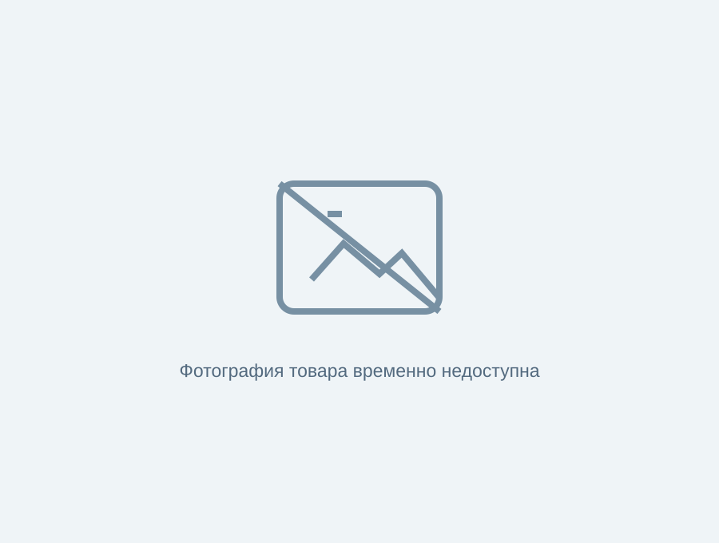

Компрессорные масла
Масло MOL Compressol R 46 AL
Масло для винтовых и пластинчатых компрессоров, включая установки с впрыском масла.
Минеральное · компрессорное
Цена по каталогу*3 500 ₸ /л
↗
Фотография из исходного каталога Satu.kzКомпрессорное масло класса ISO VG 46 для совместимых роторных компрессоров. Предназначено для смазки нагруженных узлов и поддержания работы масляного контура. Выбор выполняют по допускам вашего оборудования.
| Тип | Минеральное компрессорное масло |
|---|---|
| Класс вязкости | ISO VG 46 |
| Спецификация | ISO 6743-3A-DAJ |
| Вязкость при 40 °C | 46 сСт |
| Вязкость при 100 °C | 6,9 сСт |
| Температура вспышки | 240 °C |
| Температура застывания | −30 °C |
| Интервал замены | До 6000 ч (по описанию) |
| Производитель | Shell |
Стабильная смазка и защита рабочих узлов при подходящей спецификации.
Уточнить совместимость и цену ↗Масло для винтовых и пластинчатых компрессоров, включая установки с впрыском масла.
Для позиции «Масло Shell Corena S3 R46» лучше согласовать комплектность и совместимость, прежде чем оформлять поставку.
Вязкость и класс компрессорного масла по паспорту оборудования.
Уточнение марки, компрессора и регламента обслуживания.
Наличие и партия масла перед оформлением заказа.